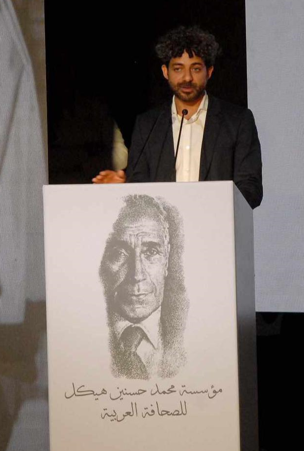

أحمد رجب
صحفي ومنتج تليفزيوني وصانع بودكاست ومدرب صحفي.

رجب، كما يناديه الأصدقاء والزملاء، صحفي مصري ومنتج تليفزيوني ومحقّق استقصائي، مسيرته تمتد إلى عام ٢٠٠٨. أجرى عشرات التحقيقات، واضطلع بدور قيادي في إعادة تشكيل وتطوير المحتوى الرقمي لـ«المصري اليوم» — اليومية المستقلة الأكبر في مصر — ولعب دوراً رئيسيّاً منتجاً في بعض أشهر البرامج الحوارية اليومية في الفضائيات المصرية، بينها «آخر كلام» مع يسري فودة على «أون تي في». اليوم، يتركّز عمله على إدارة محتوى «السلطة الخامسة»، المنصة الرقمية لـ«دويتشه فيله عربية» التي شارك في تأسيسها عام ٢٠١٨.
التحق رجب بـ«المصري اليوم» عام ٢٠٠٦ محرّراً سياسيّاً، وسرعان ما اكتسب المهارات اللازمة لإجراء التحقيقات الاستقصائية. في ٢٠١١، منحته شبكة «أريج» (الصحافيون الاستقصائيون العرب) جائزتها للربيع العربي لأفضل تحقيق في العالم العربي، عن تحقيق هروب السجناء من سجن المرج. في التاسعة والعشرين، أصبح رجب رئيساً لوحدة التحقيقات في «المصري اليوم». ترقية ثانية نقلته بعد عامين إلى موقع مدير التحرير للمنصة الرقمية، حيث مكث لمدة عامين استثمرهما في تطوير المحتوى وإطلاق منصتين فرعيتين: «شارك» — موقع مخصّص لصحافة المواطن — و«المصري لايت» — موقع يركز على القصص الإنسانية والتحقيقات المطوّلة. انتهت رحلته في «المصري» عام ٢٠١٦ بترقية أخيرة إلى مساعد رئيس التحرير.
في موازاة لافتة للصحافة المطبوعة والرقمية، شهد عام ٢٠١١ نقطة تحوّل في مسيرته حين بدأ العمل منتجاً في برنامج «آخر كلام» الحواري اليومي على «أون تي في»، بمسؤوليات مركّبة تحت ضغط المواقف المحلية المتغيرة. لاحقاً، ولفترة قصيرة، انضمّ إلى فريق إنتاج «معكم منى الشاذلي» على «سي بي سي».
ومع تراجع مساحة حرية التعبير في مصر، والعقبات التي تحول دون انتشار محتوى إعلامي مهني متوازن، أخذ رجب مساراً مختلفاً قاده إلى مقر «دويتشه فيله عربية» في برلين. هناك بدأ فصلاً جديداً بالمشاركة في تأسيس «السلطة الخامسة»، البرنامج الذي قدّمه يسري فودة عام ٢٠١٦، وتولّى منصب المنتج التنفيذي للبرنامج حتى ٢٠١٨. واستجابة لنداء العصر الرقمي، مضى رجب في تأسيس منصة رقمية تحمل الاسم نفسه، تتخصّص في إنتاج ونشر التحقيقات حول أبرز القضايا السياسية والاجتماعية في العالم العربي وخارجه.
إلى جانب ذلك، أنتج رجب بودكاست «حكاية الراهب» عن مقتل الأنبا إبيفانيوس، والذي حاز جائزة «آبل بودكاست» لأفضل بودكاست تحقيق صحفي عام ٢٠٢٢، ثم جائزة مؤسسة محمد حسنين هيكل للصحافة العربية عام ٢٠٢٣.
على مدار مسيرته محرّراً ومنتجاً، أدار رجب بتمكّن دوره في مساعدة الكتّاب والصحفيين الشباب على إيجاد طريقهم في مجال الإعلام. مهارة أتقنها بوصفه «رئيساً وصديقاً» حتّى تجاوزت العمل إلى ميدان التدريب. خلال السنوات الأربع الماضية، قاد ورشات عديدة في الكتابة الصحفية والتحقيق الاستقصائي بالتعاون مع مؤسسات مرموقة منها «أونا أكاديمي»، ويعمل مدرباً وموجّهاً رسميّاً في شبكة «أريج»، ويدرّس مساقاً للصحافة الاستقصائية في «الأكاديمية البديلة للصحافة العربية».
- ٢٠٢٣جائزة مؤسسة محمد حسنين هيكل للصحافة العربية عن بودكاست «حكاية الراهب».
- ٢٠٢٢أفضل بودكاست تحقيق صحفي — آبل بودكاست، عن «حكاية الراهب».
- ٢٠١١جائزة «أريج» للربيع العربي لأفضل تحقيق استقصائي في العالم العربي.
عندك خبر؟ خيط؟ معلومة مهمة؟
قضية تعتقد أنه يجب التحقيق فيها؟ ابعتلي هنا.
كل الرسائل سرية، وهوية المصادر محمية.